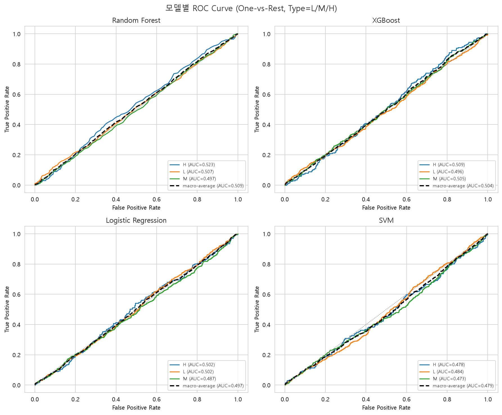
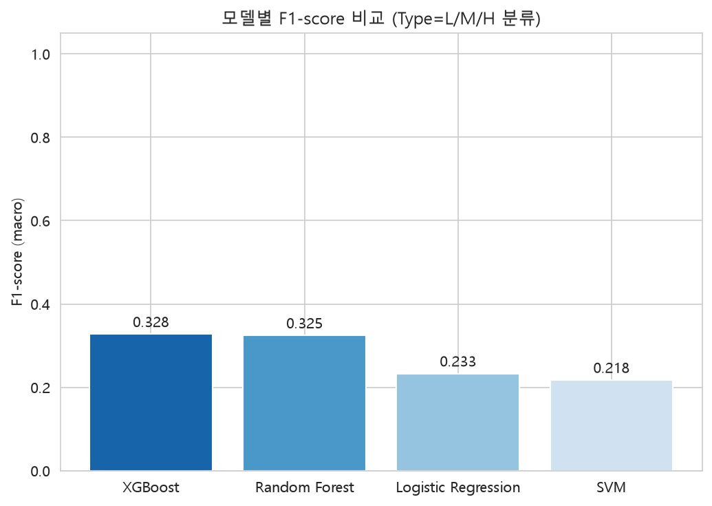

ai4i2020.csv — Random Forest / XGBoost / Logistic Regression / SVM
| 모델 | 정확도 | 정밀도 | 재현율 | F1-score | AUC |
|---|---|---|---|---|---|
| XGBoost | 0.494 | 0.327 | 0.332 | 0.328 | 0.503 |
| Random Forest | 0.492 | 0.326 | 0.330 | 0.325 | 0.509 |
| Logistic Regression | 0.239 | 0.329 | 0.330 | 0.233 | 0.497 |
| SVM | 0.223 | 0.304 | 0.297 | 0.218 | 0.478 |


Temp_diff/Power/Torque_x_ToolWear/Failure_mode_count 같은 파생변수를 추가해도 AUC는 여전히 전 모델
0.48~0.51로 랜덤 수준이다. 센서값·고장 정보만으로는 Type(품질 등급)을 유의미하게
예측하지 못한다 — Type은 가동 중 측정값과 직접적 인과관계가 없는 식별자성 라벨에 가깝다는 뜻으로
해석된다.